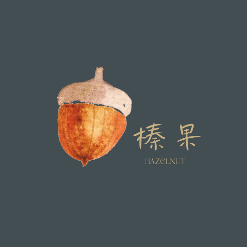

關於榛果
分享回饋、統整集合、親身經歷
有鑑於網路資訊多但分散各大網站，榛果希望打造集中分享的空間。
文章關乎新竹清交學生修課心得、工讀經驗、社團營隊等等。
榛果主張人人都是作者，渴求您的切身經歷與體驗。
希望每個人在查閱前人經驗的同時，也可以提筆回饋自己的探索
獻給新竹，交通與清華的朋友們。

徵稿條件
- 文章主題需與榛果所設主題相關，基本上圍繞在新竹、清交學生
- 作者須為交大或清大在校生
- 1000字以上算長篇，1000字以下為短篇，若文章錄用，長篇算2個榛果，短篇則是1個榛果。
*特例:附上許多輔助性之照片/雲端硬碟連結課程學期資料/期末專案作品會多加榛果，以榛果判斷為準 - 為求方便且何時何地皆能寫作，檔案以Google文件形式(請注意連結權限開放)。
- 一經錄用，榛果擁有編輯權與更改權
文章主題
- 清交修課心得
- 新竹打工/工作/家教/實習經驗
- 清交社團/營隊
- 專案/專題
- 實驗室介紹/經歷
- 新竹美食/旅行
稿費辦法
- 5顆榛果即可獲得200元稿費
- 若文章經錄用會在網站與IG上公告，一旦作者累計滿5顆榛果，榛果會主動聯繫您，詢問您選擇領取稿費或升級成更高級的堅果(會員)。
- 第一次投稿填表單時，請務必填寫正確的聯絡方式，以便榛果聯繫您。
日後即自動加入榛果會員，投稿不必再填個人資訊。
榛果只會詢問您學校郵件信箱/想公開的名稱/學校系級/匯款帳號/IG(選填)，且不做商業用途，盡請放心。
榛果會員
- 第一次投稿即為棕色腰果。
- 一旦作者累計滿5顆榛果可選擇升級成更高級的堅果(會員)。
- 有哪些堅果?
- 堅果等第將顯示於公開文章中。